13 proposals from the full UX review, in the recommended build order. No proposal is built. Bug fixes already made are listed in docs/design/ux-review/02-fixed-bugs.md. For each: Approve, Discuss or Reject, add a note if you like, then press Copy my decisions and paste the text back to Claude. Your choices are kept in this browser.
Also open: the proposed app shell (clickable) · the busiest service view, current vs proposed · every before/after on one page.
"Project", "Take", "Put on the screen", "Show", "Hide screen", "Blank" and "Clear" are used for overlapping things. Pick one word per job and use it on every surface.
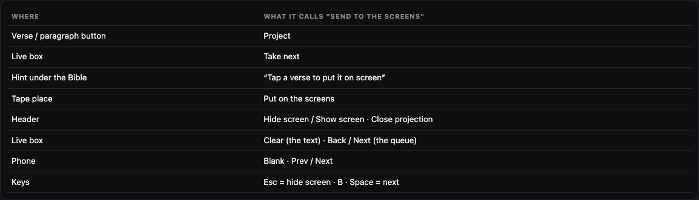
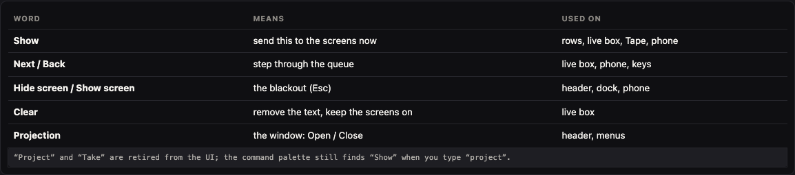
Seven text buttons in two rows (New, Open, Import, Save, Save + pictures, Open pack, Check) collapse into File ▾ plus an "Is tonight ready?" status chip.
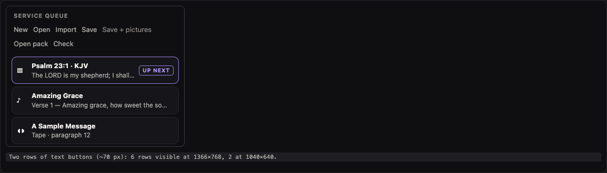
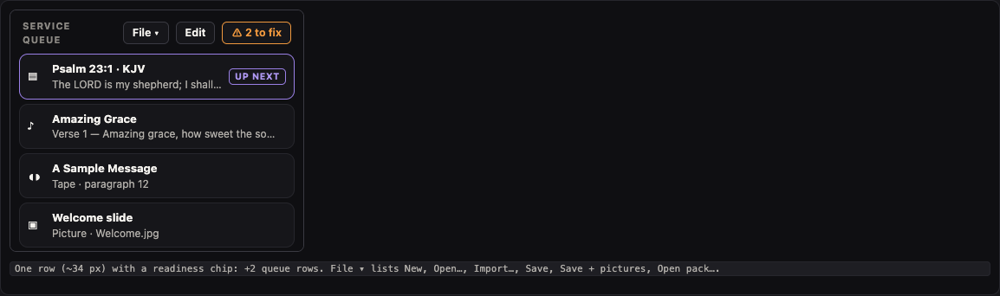
The measured controls under 24 px (Help, Shortcuts, subtabs, "Add pictures", filters) become at least 32 px; Show, Hide screen, Play and Panic at least 40 px.
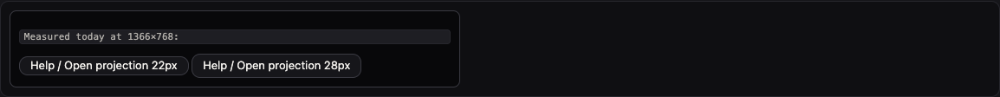
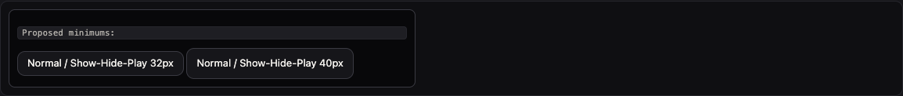
Reaching the first control of a section takes 26 Tab presses; there is no skip link and no heading level 1.
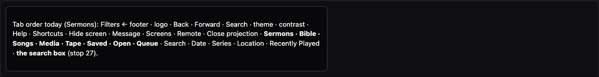
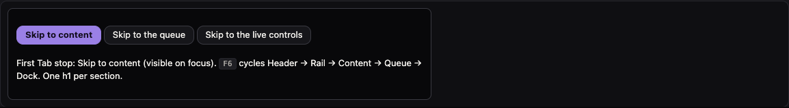
Eight rail buttons in one list, each section highlighted in its own colour (green, orange, teal, white, plum). Group them and use one meaning for colour.
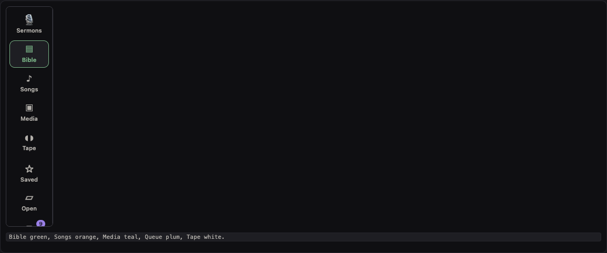
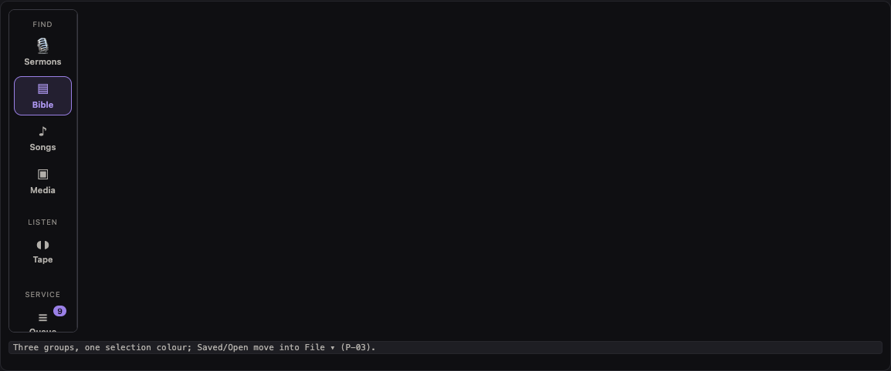
13 header controls in one row become three groups: find (search, history), ON AIR (Screens, Hide screen, Message, Open/Close projection) and a ⚙ menu (appearance, Help, Shortcuts, Remote).
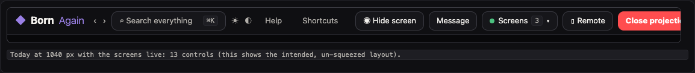
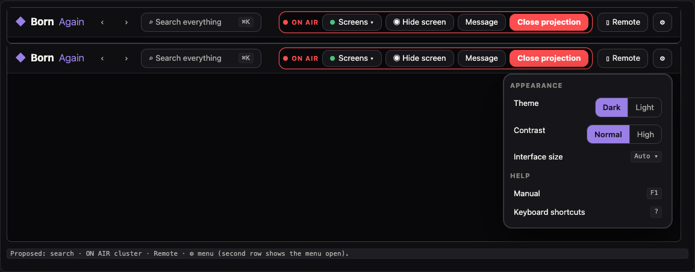
Theme and high contrast are header buttons, the interface size is only in the command palette, and language/fonts are elsewhere. Put them in the ⚙ menu (P-01).
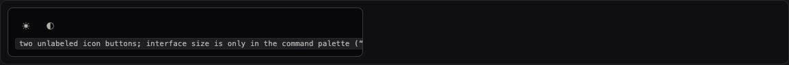
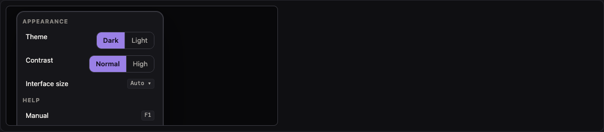
The status bar (On air · 3 displays · 12 in queue) and the tape bar are two stacked strips; the question "what is on screen right now?" is answered by a small word. Merge them into one 56 px dock.
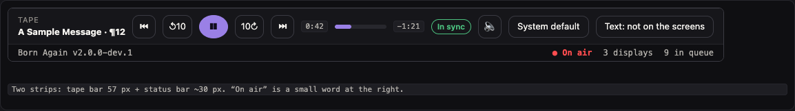
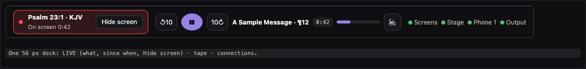
"Take next" and "Next ›" are two big purple buttons that do different things. Keep one primary: Show next.
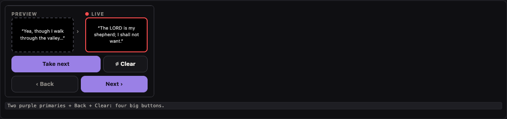
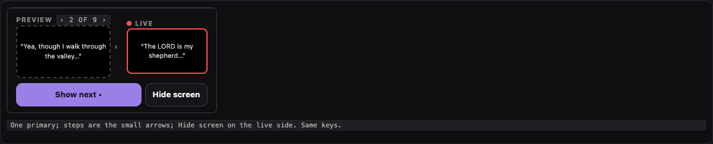
The remote has Queue, Sermons, Bible, Songs but no Media or Tape tab; when the screen is hidden the only sign is the colour of the Blank button.
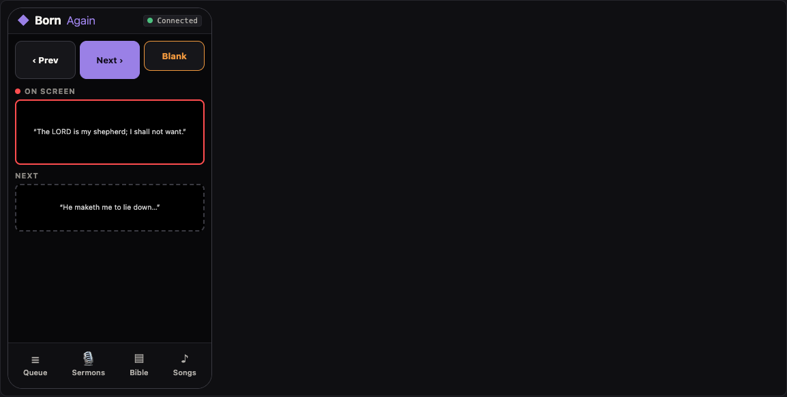
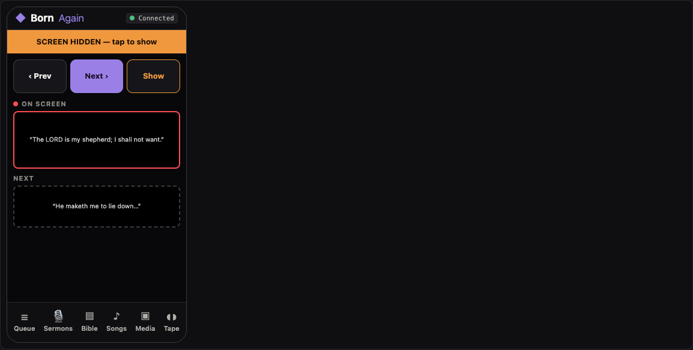
Every Bible verse and sermon paragraph carries "+ Queue" and "Project" buttons and also says "Tap a verse to put it on screen". Choose one gesture.
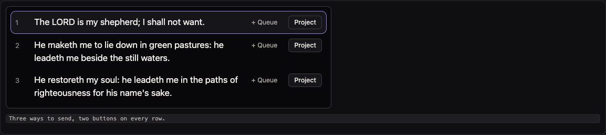
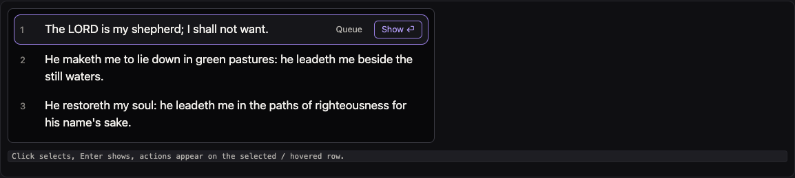
A new profile opens straight into an empty Sermons search; nothing tells a first-time volunteer what to do first.
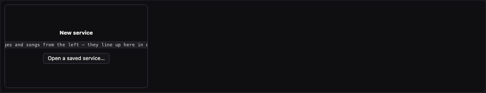
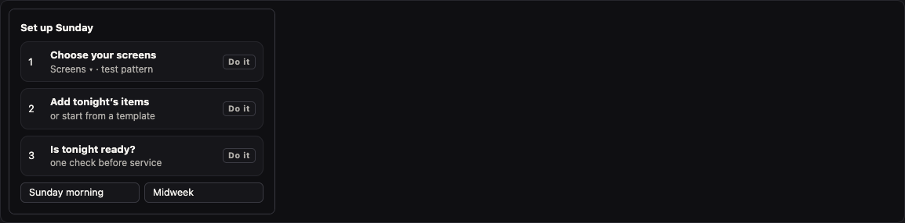
When the screens are on and the queue has items, offer a layout that puts the queue, the live and preview boxes and Next/Back at the centre; finding things opens as a slide-over.
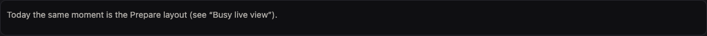
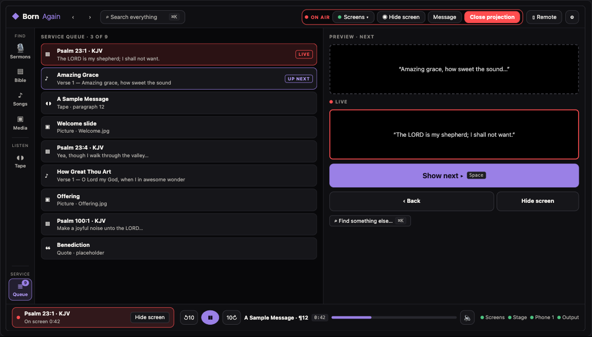